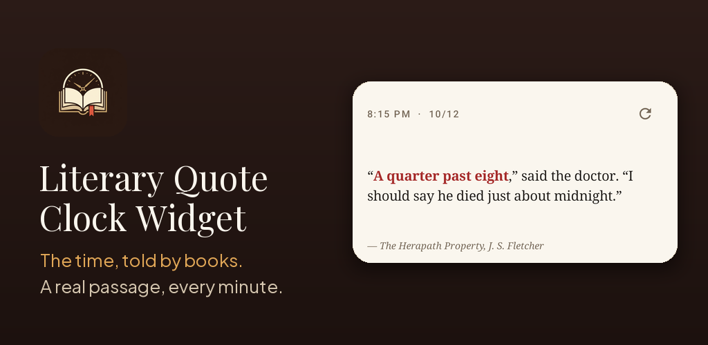
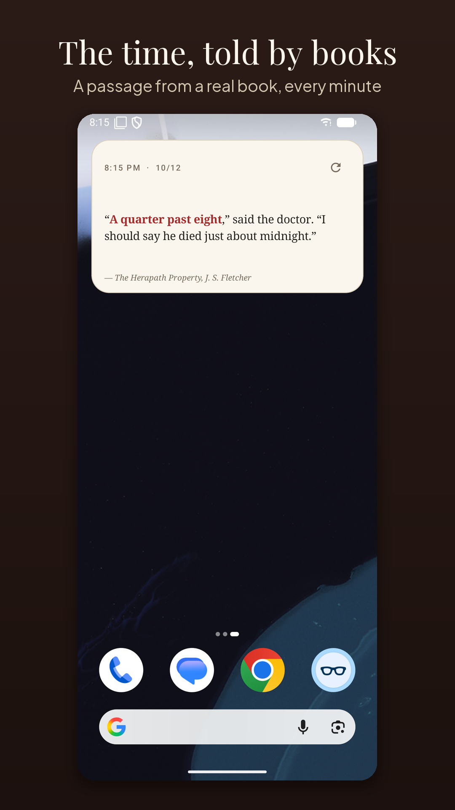
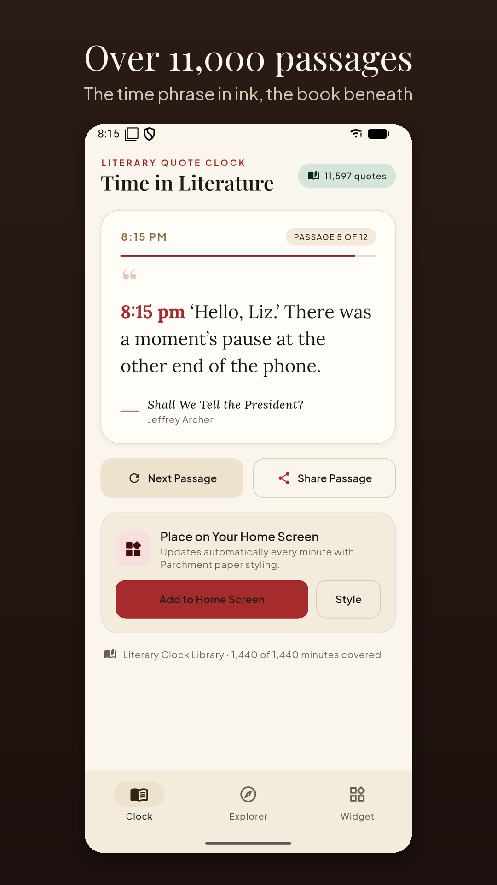
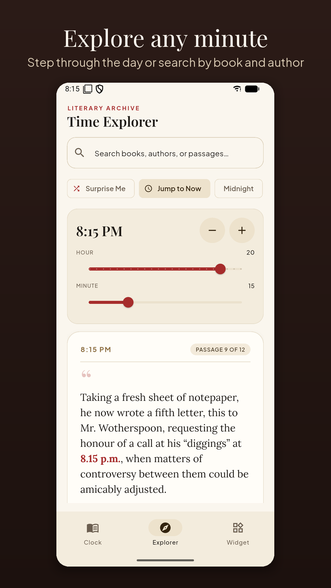
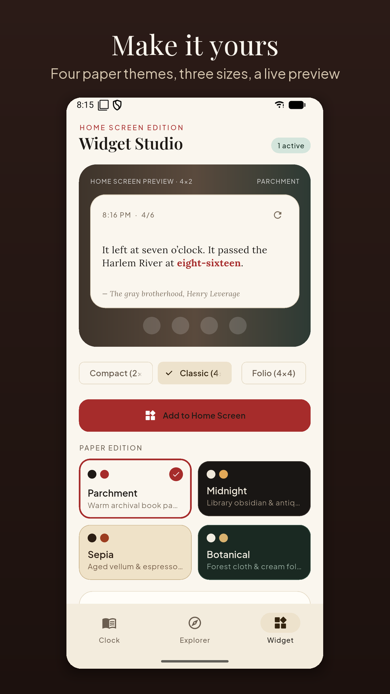
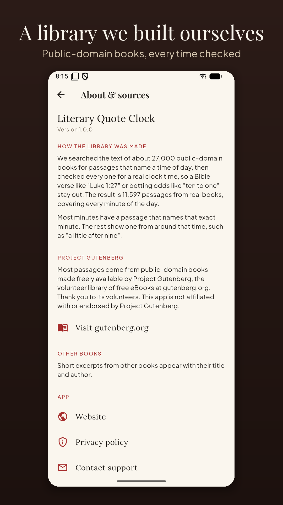

Literary Quote Clock Widget

Literary Quote Clock Widget is a clock for your home screen that tells the time with a passage from a real book. Every minute brings a new one, with the time phrase picked out in ink and the book and author beneath.
2:33 PM
At thirty-three minutes past two he heard a singular noise outside, then a hasty opening of doors.
— Around the World in 80 Days, Jules Verne





What it does
- A new passage every minute on your home screen, from a library of over 11,000 passages from novels and other books
- Every minute of the day is covered. Most minutes have passages that name that exact minute; the rest get one from “around this time”
- The time phrase stands out: “twenty minutes past nine” or “the 4.30 train” is set in bold accent ink, so the passage reads as a clock at a glance
- Always fits: each passage is fitted to the widget's size, and a long one is trimmed around the time phrase so the time is always in view
- Three sizes: Compact (2×2), Classic (4×2) and Folio (4×4)
- Widget Studio: four paper themes (Parchment, Midnight, Sepia and Botanical), text size, 12- or 24-hour time, an optional digital time stamp, attribution on or off, and a random passage each minute, all with a live preview
- Time Explorer: browse the passages for any minute, step minute by minute, tap Surprise Me for a random one, and search by book, author or words in a passage
- Share a passage with its book and author to any app
- Works offline: the whole library is built in
One price, nothing else
Literary Quote Clock Widget is a one-time $1.99 download: no ads, no in-app purchases, no subscription and no account. The app has no internet access and collects nothing. See the privacy policy.
Where the passages come from
Most passages were found by searching the text of public-domain books from Project Gutenberg, each one checked for a real clock time. Short excerpts from other books are quoted with their title and author.
Support
Questions, feedback, a passage that isn't quite right, or one you'd love to see: support@baylandblue.com